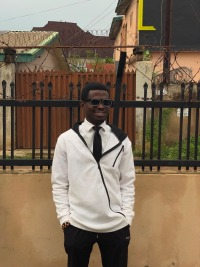

David Ajayi | WDD 130

Hello! My name is David Ajayi and I am from Nigeria. I enjoy building software applications and exploring new technologies. I am currently studying Software Development. I am excited to learn more about web development and design. I am looking forward to creating my own website and learning more about the industry. I am excited to see what the future holds for me.